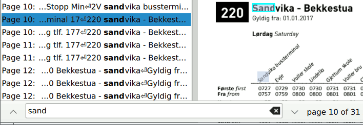

QPdfSearchModel Class
The QPdfSearchModel class searches for a string in a PDF document and holds the results. More...
| Header: | #include <QPdfSearchModel> |
| Inherits: | QAbstractListModel |
Public Types
| enum class | Role { Page, IndexOnPage, Location, ContextBefore, ContextAfter } |
Properties
- document : QPdfDocument*
- searchString : QString
Public Functions
| QPdfSearchModel(QObject *parent) | |
| virtual | ~QPdfSearchModel() override |
| QPdfDocument * | document() const |
| QPdfLink | resultAtIndex(int index) const |
| QList<QPdfLink> | resultsOnPage(int page) const |
| QString | searchString() const |
Reimplemented Public Functions
| virtual QVariant | data(const QModelIndex &index, int role) const override |
| virtual QHash<int, QByteArray> | roleNames() const override |
| virtual int | rowCount(const QModelIndex &parent) const override |
Public Slots
| void | setDocument(QPdfDocument *document) |
| void | setSearchString(const QString &searchString) |
Signals
| void | documentChanged() |
| void | searchStringChanged() |
Detailed Description
This is used in the Model/View Programming paradigm to display a list of search results, to highlight them on the rendered PDF pages, and to iterate through them using the "search forward" / "search backward" buttons and shortcuts that would be found in a typical document-viewing UI:

Member Type Documentation
enum class QPdfSearchModel::Role
| Constant | Value | Description |
|---|---|---|
QPdfSearchModel::Role::Page | Qt::UserRole | The page number where the search result is found (int). |
QPdfSearchModel::Role::IndexOnPage | 257 | The index of the search result on the page (int). |
QPdfSearchModel::Role::Location | 258 | The position of the search result on the page (QPointF). |
QPdfSearchModel::Role::ContextBefore | 259 | The adjacent text on the page, before the search string (QString). |
QPdfSearchModel::Role::ContextAfter | 260 | The adjacent text on the page, after the search string (QString). |
See also QPdfLink.
Property Documentation
document : QPdfDocument*
This property holds the document to search
Access functions:
| QPdfDocument * | document() const |
| void | setDocument(QPdfDocument *document) |
Notifier signal:
| void | documentChanged() |
searchString : QString
This property holds the string to search for
Access functions:
| QString | searchString() const |
| void | setSearchString(const QString &searchString) |
Notifier signal:
| void | searchStringChanged() |
Member Function Documentation
[explicit] QPdfSearchModel::QPdfSearchModel(QObject *parent)
Constructs a new search model with parent object parent.
[override virtual noexcept] QPdfSearchModel::~QPdfSearchModel()
Destroys the model.
[override virtual] QVariant QPdfSearchModel::data(const QModelIndex &index, int role) const
Reimplements: QAbstractItemModel::data(const QModelIndex &index, int role) const.
QPdfLink QPdfSearchModel::resultAtIndex(int index) const
Returns a result found by index in the document, regardless of the page on which it was found. index must be less than rowCount.
QList<QPdfLink> QPdfSearchModel::resultsOnPage(int page) const
Returns the list of all results found on the given page.
[override virtual] QHash<int, QByteArray> QPdfSearchModel::roleNames() const
Reimplements: QAbstractItemModel::roleNames() const.
[override virtual] int QPdfSearchModel::rowCount(const QModelIndex &parent) const
Reimplements: QAbstractItemModel::rowCount(const QModelIndex &parent) const.
The number of rows in the model is equal to the number of search results found.